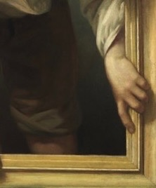
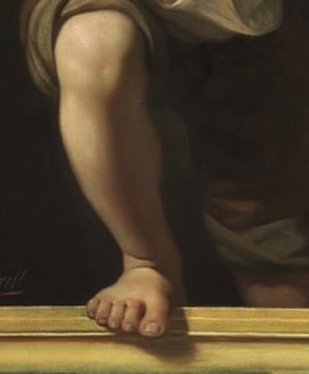

L'Evasione dall'Accademismo
Pere Borrell del Caso (1835–1910) è stato un pittore spagnolo celebre per la sua maestria nel Trompe-l'œil, la tecnica di "ingannare l'occhio". Rifiutò per ben due volte la cattedra alla Scuola di Belle Arti di Barcellona per fondare la propria accademia indipendente, promuovendo una visione dell'arte libera dai dogmi istituzionali.
Fuggendo dalla Critica (1874)
Questo capolavoro non è solo un dipinto, ma una sfida visiva. Rappresenta un giovane che tenta letteralmente di scavalcare la cornice del quadro per fuggire nel mondo reale.

La tecnica del pittore rompe il confine tra lo spazio dell'osservatore e quello dell'opera. Notate come la luce e le ombre creano una profondità tale da rendere l'illusione quasi tangibile.
Dettagli dell'Illusione
La forza di quest'opera risiede nei dettagli anatomici che accentuano il movimento di "uscita" dalla tela.

La mano che afferra la cornice esterna, mostrando la tensione del movimento.

Il piede che scavalca il bordo inferiore, completando l'inganno ottico.